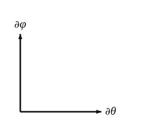

The standard chart on S 2 S^2 S 2
Φ ( θ , φ ) = ( sin θ cos φ , sin θ sin φ , cos θ ) . \Phi(\theta, \varphi) = (\sin\theta \cos\varphi, \; \sin\theta \sin\varphi, \; \cos\theta).
Φ ( θ , φ ) = ( sin θ cos φ , sin θ sin φ , cos θ ) .
Basis vectors
In the embedded picture, the coordinate basis at the point p = Φ ( θ , φ ) p = \Phi(\theta, \varphi) p = Φ ( θ , φ ) Φ \Phi Φ
∂ θ = ∂ Φ ∂ θ = ( cos θ cos φ , cos θ sin φ , − sin θ ) , ∂ φ = ∂ Φ ∂ φ = ( − sin θ sin φ , sin θ cos φ , 0 ) . \begin{aligned}
\partial_\theta &= \frac{\partial \Phi}{\partial \theta} = (\cos\theta\cos\varphi, \; \cos\theta\sin\varphi, \; -\sin\theta), \\[2pt]
\partial_\varphi &= \frac{\partial \Phi}{\partial \varphi} = (-\sin\theta\sin\varphi, \; \sin\theta\cos\varphi, \; 0).
\end{aligned} ∂ θ ∂ φ = ∂ θ ∂ Φ = ( cos θ cos φ , cos θ sin φ , − sin θ ) , = ∂ φ ∂ Φ = ( − sin θ sin φ , sin θ cos φ , 0 ) .
These two vectors in R 3 \mathbb{R}^3 R 3 S 2 S^2 S 2 p p p T p S 2 T_p S^2 T p S 2
Two facts at a glance:
Lengths. ∣ ∂ θ ∣ = 1 |\partial_\theta| = 1 ∣ ∂ θ ∣ = 1 ∣ ∂ φ ∣ = sin θ |\partial_\varphi| = \sin\theta ∣ ∂ φ ∣ = sin θ Orthogonality. g ( ∂ θ , ∂ φ ) = ∂ θ ⋅ ∂ φ = 0 \tens{g}(\partial_\theta, \partial_\varphi) = \partial_\theta \cdot \partial_\varphi = 0 g ( ∂ θ , ∂ φ ) = ∂ θ ⋅ ∂ φ = 0
Both follow from the formulas above, with the round metric as the dot product of R 3 \mathbb{R}^3 R 3
At the sample point
Plug θ 0 = 13 π / 32 , φ 0 = 29 π / 32 \theta_0 = 13\pi/32, \varphi_0 = 29\pi/32 θ 0 = 13 π /32 , φ 0 = 29 π /32
p ≈ ( − 0.916 , 0.278 , 0.290 ) , ∂ θ ∣ p ≈ ( − 0.278 , 0.0843 , − 0.957 ) , ∂ φ ∣ p ≈ ( − 0.278 , − 0.916 , 0 ) . \begin{aligned}
p &\approx (-0.916, \; 0.278, \; 0.290), \\
\partial_\theta\big|_p &\approx (-0.278, \; 0.0843, \; -0.957), \\
\partial_\varphi\big|_p &\approx (-0.278, \; -0.916, \; 0).
\end{aligned} p ∂ θ p ∂ φ p ≈ ( − 0.916 , 0.278 , 0.290 ) , ≈ ( − 0.278 , 0.0843 , − 0.957 ) , ≈ ( − 0.278 , − 0.916 , 0 ) .
Verification: ∂ θ ⋅ ∂ φ = ( − 0.278 ) ( − 0.278 ) + ( 0.0843 ) ( − 0.916 ) + ( − 0.957 ) ( 0 ) = 0.0773 − 0.0772 + 0 ≈ 0 \partial_\theta \cdot \partial_\varphi = (-0.278)(-0.278) + (0.0843)(-0.916) + (-0.957)(0) = 0.0773 - 0.0772 + 0 \approx 0 ∂ θ ⋅ ∂ φ = ( − 0.278 ) ( − 0.278 ) + ( 0.0843 ) ( − 0.916 ) + ( − 0.957 ) ( 0 ) = 0.0773 − 0.0772 + 0 ≈ 0
The tangent-plane diagram, drawn locally at p p p

The horizontal arrow is ∂ θ \partial_\theta ∂ θ ∂ φ \partial_\varphi ∂ φ sin θ 0 ≈ 0.957 \sin\theta_0 \approx 0.957 sin θ 0 ≈ 0.957 ∂ φ \partial_\varphi ∂ φ
Components
A general tangent vector at p p p
v = v θ ∂ θ + v φ ∂ φ , \tens{v} = v^\theta\, \partial_\theta + v^\varphi\, \partial_\varphi,
v = v θ ∂ θ + v φ ∂ φ ,
with components ( v θ , v φ ) ∈ R 2 (v^\theta, v^\varphi) \in \mathbb{R}^2 ( v θ , v φ ) ∈ R 2
The chart-coordinate functions on S 2 S^2 S 2 θ ( p ) = arccos Z \theta(p) = \arccos Z θ ( p ) = arccos Z φ ( p ) = atan2 ( Y , X ) \varphi(p) = \operatorname{atan2}(Y, X) φ ( p ) = atan2 ( Y , X ) ( 0 , 2 π ) (0, 2\pi) ( 0 , 2 π ) d θ , d φ d\theta, d\varphi d θ , d φ dual basis
d θ ( ∂ θ ) = 1 , d θ ( ∂ φ ) = 0 , d φ ( ∂ θ ) = 0 , d φ ( ∂ φ ) = 1. d\theta(\partial_\theta) = 1, \quad d\theta(\partial_\varphi) = 0, \quad d\varphi(\partial_\theta) = 0, \quad d\varphi(\partial_\varphi) = 1.
d θ ( ∂ θ ) = 1 , d θ ( ∂ φ ) = 0 , d φ ( ∂ θ ) = 0 , d φ ( ∂ φ ) = 1.
A general covector is ω = ω θ d θ + ω φ d φ \tens{\omega} = \omega_\theta\, d\theta + \omega_\varphi\, d\varphi ω = ω θ d θ + ω φ d φ v \tens{v} v ω ( v ) = ω θ v θ + ω φ v φ \tens{\omega}(\tens{v}) = \omega_\theta\, v^\theta + \omega_\varphi\, v^\varphi ω ( v ) = ω θ v θ + ω φ v φ
Why this chart is the “easy” one
In the standard chart, almost everything has a diagonal form:
The round metric has the diagonal matrix [ g μ ν ] = d i a g ( 1 , sin 2 θ ) [g_{\mu\nu}] = \mathrm{diag}(1, \sin^2\theta) [ g μν ] = diag ( 1 , sin 2 θ )
The basis is orthogonal, so raising and lowering multiplies each component by g μ μ g_{\mu\mu} g μμ 1 / g μ μ 1/g_{\mu\mu} 1/ g μμ
The Christoffel symbols (chapter 8 ) have only three non-zero entries.
The next page introduces the skew chart, which has none of these properties. The math is identical; the components are not.
Cotangent space
T p ∗ M T^*_p M T p ∗ M dual of the tangent space : the linear functionals on T p M T_p M T p M p p p d x i dx^i d x i d x i ( ∂ j ) = δ j i dx^i(\partial_j) = \delta^i_j d x i ( ∂ j ) = δ j i ω = ω i d x i \tens{\omega} = \omega_i\, dx^i ω = ω i d x i ∂ i \partial_i ∂ i d f ( v ) = v ( f ) df(\tens{v}) = \tens{v}(f) df ( v ) = v ( f ) ω ( v ) = ω i v i \tens{\omega}(\tens{v}) = \omega_i v^i ω ( v ) = ω i v i cotangent-space page .
Musical isomorphism
The metric’s canonical identification of vectors with covectors. On a bare manifold the tangent space and its dual have the same dimension but no canonical isomorphism between them (contrast the double dual, where V ∗ ∗ ≅ V V^{**} \cong V V ∗∗ ≅ V is canonical). A metric g \tens{g} g musical isomorphisms
♭ : T p M → T p ∗ M , v ♭ : = g ( v , ⋅ ) , ♯ : = ♭ − 1 : T p ∗ M → T p M , \flat: T_p M \to T^*_p M, \qquad \tens{v}^\flat := \tens{g}(\tens{v}, \cdot), \qquad \sharp := \flat^{-1}: T^*_p M \to T_p M,
♭ : T p M → T p ∗ M , v ♭ := g ( v , ⋅ ) , ♯ := ♭ − 1 : T p ∗ M → T p M ,
named for how they move the component index down (v μ = g μ ν v ν v_\mu = g_{\mu\nu}\, v^\nu v μ = g μν v ν ω μ = g μ ν ω ν \omega^\mu = g^{\mu\nu}\, \omega_\nu ω μ = g μν ω ν raising and lowering applied to a single index.
The gradient is the standard illustration of the distinction ♯ \sharp ♯ d f df df gradient grad f : = ( d f ) ♯ \operatorname{grad} f := (df)^\sharp grad f := ( df ) ♯ R n \mathbb{R}^n R n g μ ν ≠ δ μ ν g_{\mu\nu} \neq \delta_{\mu\nu} g μν = δ μν
Affine connection
An R \mathbb{R} R ∇ : ( X , Y ) ↦ ∇ X Y \nabla: (\tens{X}, \tens{Y}) \mapsto \nabla_{\tens{X}} \tens{Y} ∇ : ( X , Y ) ↦ ∇ X Y C ∞ ( M ) C^\infty(M) C ∞ ( M ) X \tens{X} X Y \tens{Y} Y ∇ X ( f Y ) = X ( f ) Y + f ∇ X Y \nabla_{\tens{X}}(f\tens{Y}) = \tens{X}(f)\, \tens{Y} + f\, \nabla_{\tens{X}} \tens{Y} ∇ X ( f Y ) = X ( f ) Y + f ∇ X Y ∇ ∂ μ ∂ ν = Γ ρ μ ν ∂ ρ \nabla_{\partial_\mu} \partial_\nu = \Gamma^\rho{}_{\mu\nu}\, \partial_\rho ∇ ∂ μ ∂ ν = Γ ρ μν ∂ ρ Christoffel symbols ), are not a tensor: their transformation law has an inhomogeneous second-derivative term. The difference of two connections is a ( 1 , 2 ) (1, 2) ( 1 , 2 ) affine-connection page .
Dual space
For a vector space V V V k k k dual space is the space of k k k
V ∗ : = H o m k ( V , k ) . V^* := \mathrm{Hom}_k(V, k).
V ∗ := Hom k ( V , k ) .
For finite-dimensional V V V dim V ∗ = dim V \dim V^* = \dim V dim V ∗ = dim V { e i } \{e_i\} { e i } V V V dual basis { e i } \{e^i\} { e i } V ∗ V^* V ∗ e i ( e j ) = δ j i e^i(e_j) = \delta^i_j e i ( e j ) = δ j i V V V V ∗ ∗ ≅ V V^{**} \cong V V ∗∗ ≅ V v ↦ ( ω ↦ ω ( v ) ) \tens{v} \mapsto (\tens{\omega} \mapsto \tens{\omega}(\tens{v})) v ↦ ( ω ↦ ω ( v )) T p ∗ M T^*_p M T p ∗ M T p M T_p M T p M
Tangent space
T p M T_p M T p M n n n p p p derivations at p p p ∂ i = ∂ / ∂ x i \partial_i = \partial/\partial x^i ∂ i = ∂ / ∂ x i v = v i ∂ i \tens{v} = v^i\, \partial_i v = v i ∂ i v ′ i ′ = ( ∂ x ′ i ′ / ∂ x j ) v j v'^{i'} = (\partial x'^{i'}/\partial x^j)\, v^j v ′ i ′ = ( ∂ x ′ i ′ / ∂ x j ) v j tangent-space page .
Derivation
For the commutative algebra A = C ∞ ( M ) A = C^\infty(M) A = C ∞ ( M ) derivation at p ∈ M p \in M p ∈ M is an R \mathbb{R} R D : A → R D: A \to \mathbb{R} D : A → R Leibniz rule
D ( f g ) = f ( p ) D ( g ) + g ( p ) D ( f ) . D(fg) = f(p)\, D(g) + g(p)\, D(f).
D ( f g ) = f ( p ) D ( g ) + g ( p ) D ( f ) .
Every derivation at p p p p p p D ( x i ) D(x^i) D ( x i ) x = ( x 1 , … , x n ) x = (x^1, \ldots, x^n) x = ( x 1 , … , x n ) n n n T p M T_p M T p M
The derivation viewpoint generalizes: a derivation of A A A A A A